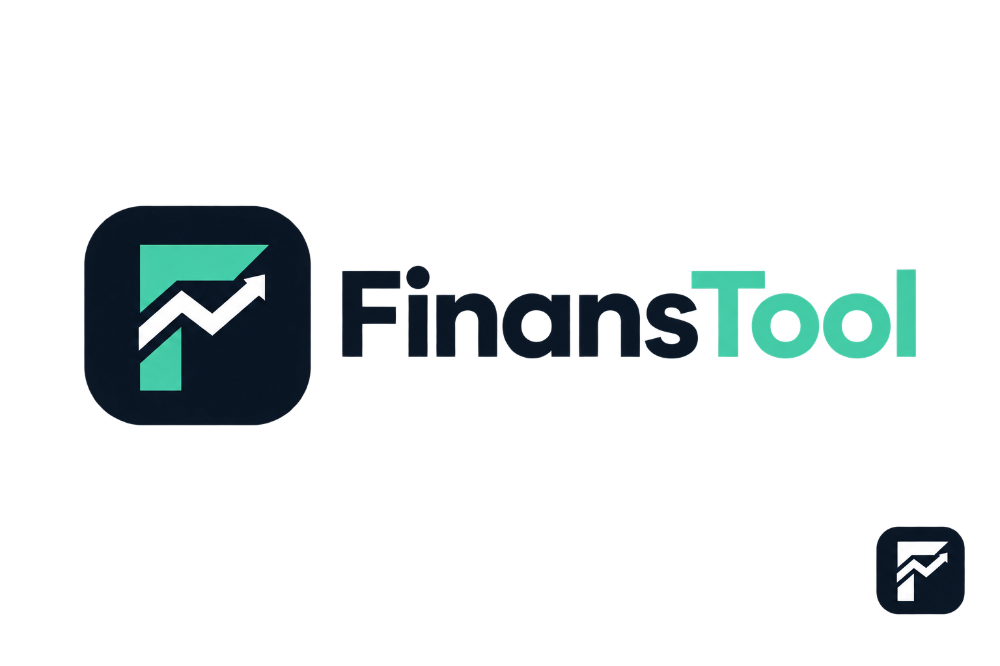
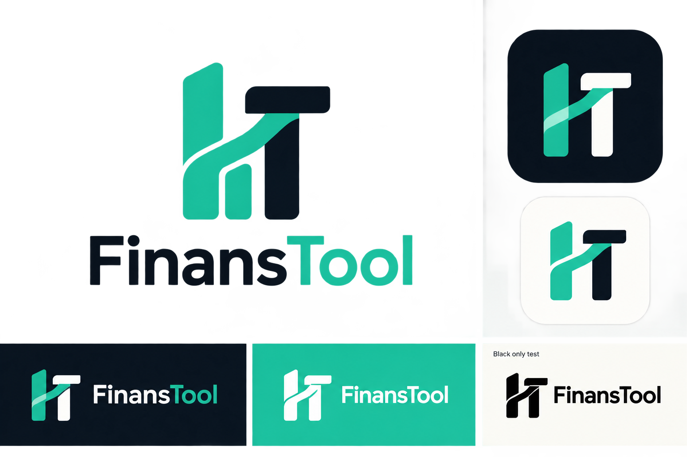
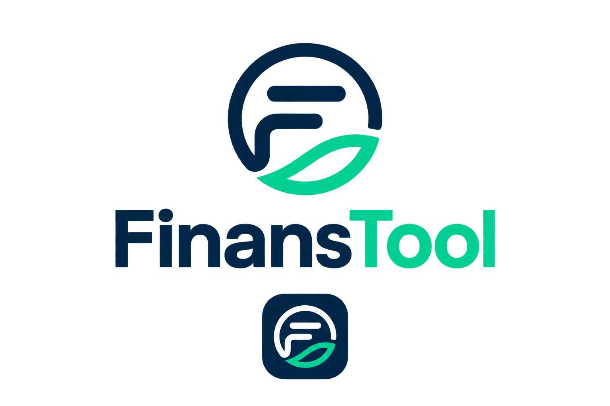
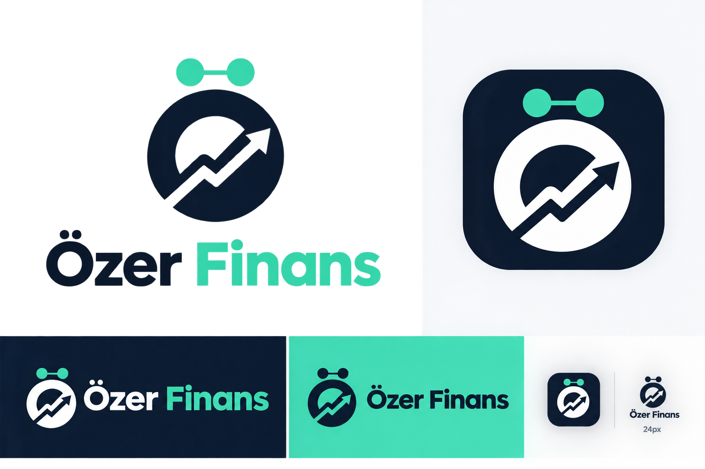
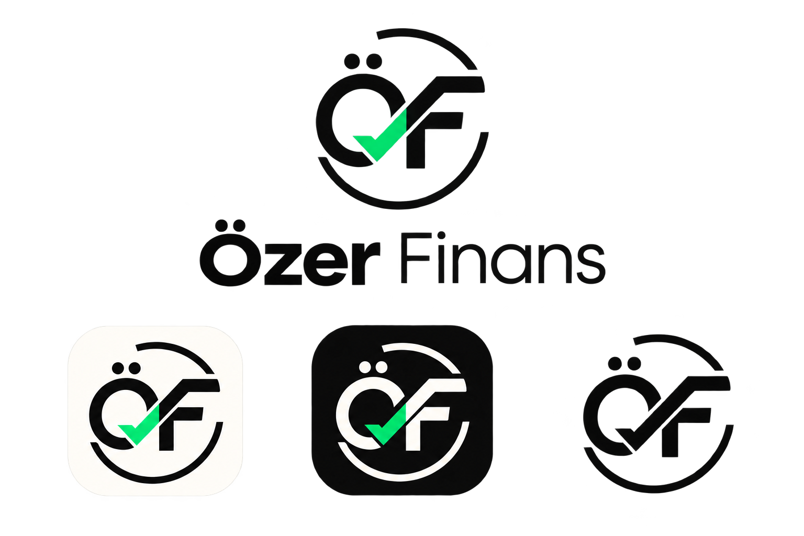
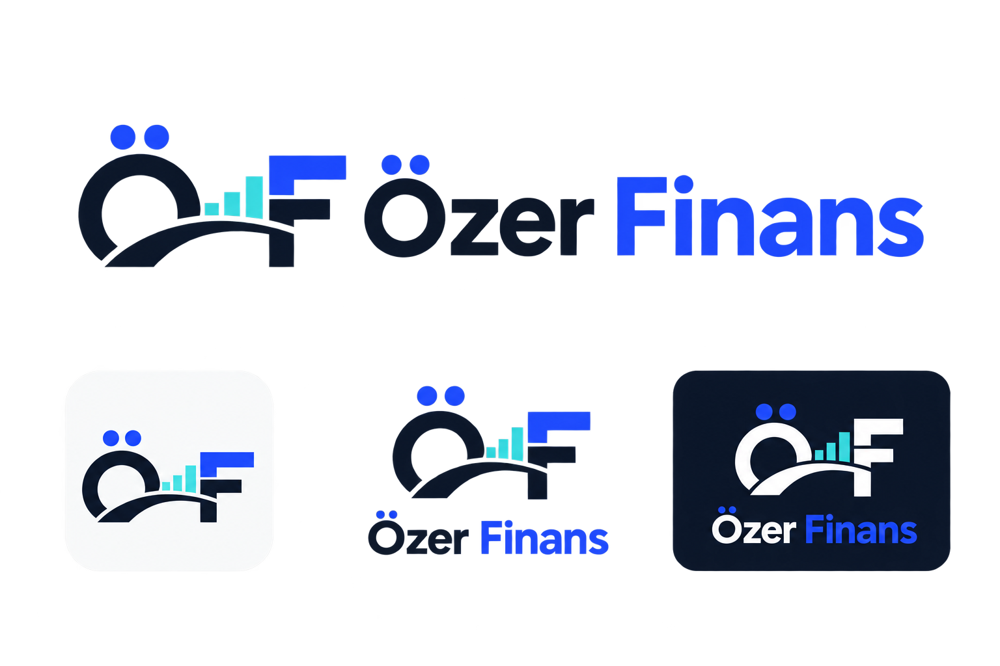

A · Yükselen F
Doğrudan
F monogramı ve yükseliş yolu.
Görseli tam boy açmak için üzerine dokunun. A–C FinansTool, D–F Özer Finans adına hazırlanmıştır.

F monogramı ve yükseliş yolu.

Küçük uygulama ikonunda en dengeli FinansTool seçeneği.

Daha kullanıcı dostu ve organik karakter.

Ö noktaları ve piyasa çizgisiyle en güçlü kişisel marka.

Güven ve tamamlanmış analiz vurgusu.

Uzun vadeli portföy yönetimi hissi.